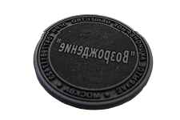

Гравировка
Изделия
Пломбир для опечатывания на пластилине предназначен для опечатывания различных помещений, сейфов, складов и т.д. Когда опечатанный объект вскрывается, целостность оттиска пломбира, сделанного на пластилине, нарушается. Пломбиры изготавливаются из латуни.
Для удобства Вы можете докупить специальные чашки для пластилина и пеналы для опечатывания ключей.
Пломбиратор предназначен для опломбирования контейнеров, ящиков, помещений, различных измерительных приборов (электросчетчиков, водосчетчиков и т.д.) свинцовыми или пластиковыми пломбами. При опломбировании пломбиратором вместе с пломбами рекомендуется применять специальную проволоку, которая надежно фиксирует пломбу, имея витую структуру своей поверхности.
Рельефные печати (сухие печати для тиснения на бумаге) служат в виде дополнительной степени защиты от подделки документа. Также рельефная печать на фирменном бланке придает солидность любой организации, использующей ее в своей работе. И, наконец, это просто красиво. Диаметр рельефной печати может быть любым до 50 мм. Нужно всего лишь приложить небольшое усилие к оснастке печати, и на цветном лейбле, наклеенном на бумагу, появится красивое тисненое изображение рельефной печати.
Номерки. Мы предлагаем большой выбор прочных и элегантных номерков различного дизайна, бирок для ключей изготовленных по современной технологии лазерной гравировки на высококачественном двухслойном пластике. Высокий уровень данной технологии позволяет получать изображения, которые отличаются высочайшим качеством, точностью и современным дизайном. Благодаря структурным изменениям поверхности, изображения наносятся практически "навечно", что недоступно при изготовлении табличек другими методами. Двухслойный пластик позволяет осуществлять практически весь спектр гравировальных работ, а широкая гамма цветовых сочетаний и различная толщина листа, дают возможность изготавливать самую разнообразную продукцию. Толщина пластика 0.8 - 1.5мм.
Таблички. Значение информационных идентификаторов трудно переоценить - они нужны всем! Не секрет, что всевозможные средства визуальной коммуникации упрощают деловое общение. Однако на практике о табличках и указателях нередко вспоминают в самую последнюю очередь. А ведь информационные доски, вывески, табло с необходимыми сведениями помогут посетителям ответить на массу вопросов и позволят им почувствовать себя более комфортно. Кроме того, качественно выполненные таблички украсят интерьер и придадут Вашему офису солидность и стиль.
Латунь является традиционным материалом для изготовления табличек. История табличек из сплавов меди насчитывает несколько столетий.
В любом рабочем или жилом пространстве всегда возникает задача идентификации помещений. Самое экономичное решение - заказать дешевые пластиковые таблички
Таблички из анодированного алюминия позволят недорого и презентабельно провести идентификацию помещений. В отличие от пластиковых табличек - эти изделия имеют более привлекательный внешний вид за счет применения металла.
Таблички из стекла - закрепленные на дистанционных полированных штифтах, эти изделия отлично смотрятся на поверхностях, имеющих рельеф и рисунок. Идеальная гладкость и прозрачность стекла, плюс неповторимая игра света на полированных гранях эффектно подчеркивают фактуру стены, а логотип (надпись) "парит" над плоскостью.
Настольные таблички - непременный атрибут помещений, где происходит общение персонала с клиентами.
Табличка на столе, на которой написана должность и имя менеджера - это элемент хорошего тона. В любом западном фильме Вы обязательно увидите этот офисный аксессуар - на рабочем столе клерка, на кафедре судьи, в зале заседаний и комнате переговоров.
ГРАВИРОВКА
Сегодня лазерная гравировка является самым приоритетным способом нанесения изображений практически на любые материалы.
Она обладает высокой производительностью, разрешением, точностью и качеством, но самое главное — обеспечивает максимальную долговечность изображения, недоступную другим способам нанесения.
Лазерную гравировку отличает качество, высокое разрешение и исключительная стойкость получаемых изображений, что недоступно другим способам печати. Сам же процесс лазерной гравировки по простоте сравним с печатью на обычном принтере.
Используемое современное оборудование для лазерной маркировки и гравировки позволяет нам оперативно наносить на изделия наших заказчиков графическую и текстовую информацию любой сложности, вплоть до полутоновых фотоизображений или штрих-кодов. А созданное дизайнером или сканированное изображение воспроизводится на изделии за несколько минут. Предлагаем Вам наши услуги - лазерная гравировка изделий из различных материалов ( пластика, металла, кожи, дерева, бумаги, стекла, оргстекла, акрила и пр.), а также имеющих многослойные, покрытые или окрашенные поверхности.
 Услуги лазерной гравировки Услуги лазерной гравировки
Информация
|